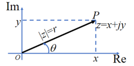
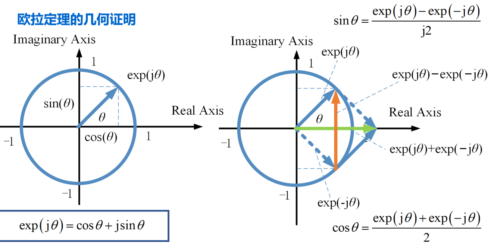
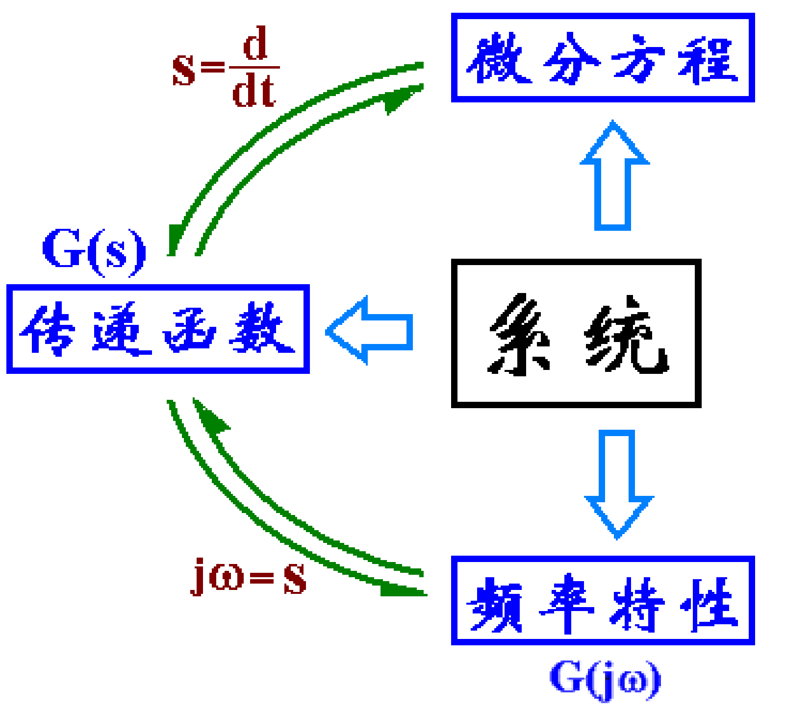
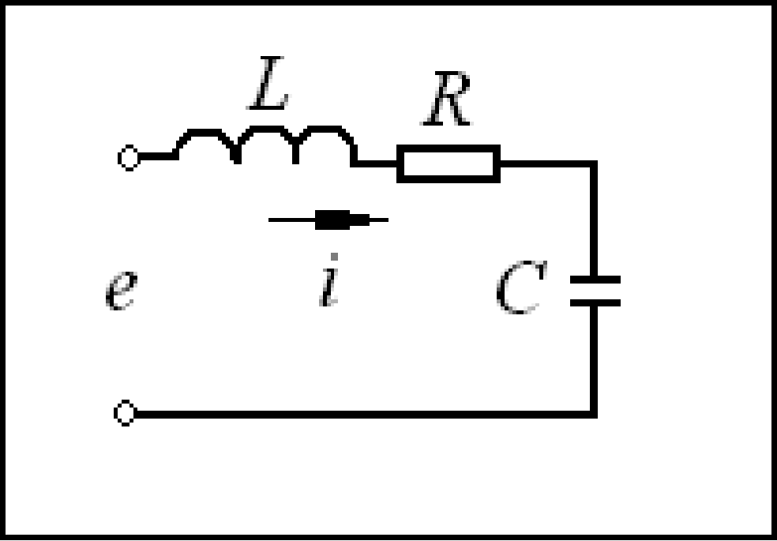

5.1 线性系统的频域分析法 - 概念与内涵
本章主要介绍线性系统频域分析的基本概念和内涵，重点讲解频率特性的定义、频率响应的物理意义、欧拉定理的应用，以及频率特性与传递函数之间的内在联系。
本章学习目标
- 掌握频率特性的内涵和物理意义
- 理解频率特性与传递函数之间的联系
- 掌握频率响应的基本概念
- 理解欧拉定理在频域分析中的应用
- 学会通过频率响应进行系统辨识
章节内容概述
5.1.1 频域分析与时域分析的比较
5.1.2 复变函数与复数表示回顾
5.1.3 欧拉定理及其证明
5.1.4 频率响应的基本概念
5.1.5 频率特性的定义与性质
5.1.6 频率特性与传递函数的关系
5.1.7 实践练习与系统辨识
笔记说明：本笔记基于PPT内容整理，补充了必要的公式推导和解释说明，确保内容完整性。
5.1.1 频域分析与时域分析的比较
时域分析
- 输入信号：阶跃输入
- 分析对象：二阶系统在时间域的瞬态响应
- 评价指标：时域性能指标（上升时间、调节时间、超调量等）
- 特点：直接反映系统的时间响应特性
频域分析
- 输入信号：谐波（正弦）输入
- 分析对象：二阶或高阶系统在时间域的稳态响应
- 表示方法：使用曲线、图形更直观反映系统结构参数与响应的关系
- 优势：能够指出改善系统性能的途径
- 特点：通过频率特性分析系统的动态性能
比较总结
| 分析类型 | 输入信号 | 分析重点 | 表示方法 | 应用特点 |
|---|---|---|---|---|
| 时域分析 | 阶跃信号 | 瞬态响应 | 时间函数 | 直接、直观 |
| 频域分析 | 正弦信号 | 稳态响应 | 频率曲线 | 揭示系统结构特性 |
5.1.2 复变函数与复数表示回顾
复数的基本概念
复数 可以表示为：
- 代数表示：
- 三角表示：
- 指数表示：
- 极坐标表示：
其中：
- ：实部，
- ：虚部，
- ：模或绝对值，
- ：幅角，
复数的运算性质
- 加法：
- 乘法：
- 除法：

5.1.3 欧拉定理及其证明
欧拉定理
欧拉定理建立了三角函数与指数函数之间的关系：
欧拉定理的证明
代数证明
利用泰勒级数展开：
比较可知：
几何证明
在复平面上， 表示单位圆上角度为 的点，其坐标为 。

欧拉定理的应用
- 简化复数运算：将三角运算转化为指数运算
- 信号分析：表示正弦信号为复指数形式
- 控制系统：分析频率响应特性
5.1.4 频率响应的基本概念
频率响应的定义
对于一个稳定的线性系统，当输入为正弦信号时：
系统的稳态输出为同频率的正弦信号：
其中：
- ：输出幅值，是频率 的函数
- ：输出相位，是频率 的函数
频率响应的物理意义
- 稳态频率一致性：输出与输入同频率
- 幅值变化：输出幅值随频率变化
- 相位偏移：输出相位相对输入有偏移
频率响应的数学描述
根据微分方程解的理论，若对系统输入谐波信号 ，系统的稳态输出响应也为同一频率的谐波信号，但幅值和相位发生了变化。
5.1.5 频率特性的定义与性质
频率特性的定义
频率特性是对系统频率响应特性的完整描述，包括：
-
幅频特性：稳态输出与输入谐波的幅值比
-
相频特性：稳态输出与输入谐波的相位差
-
频率特性函数：关于谐波频率的复变函数
频率特性的性质
- 复变函数： 是 的复变函数
- 量纲一致性：频率特性的量纲就是传递函数的量纲，也是输出信号与输入信号的量纲之比
- 与传递函数的关系： 就是 中的 时的结果
频率特性的表示形式
- 代数形式：
- 指数形式：
- 极坐标形式：
5.1.6 频率特性与传递函数的关系
基本关系
对于线性定常系统，频率特性 与传递函数 之间存在直接关系：
物理意义
- s域到频域的映射：将拉普拉斯变量 替换为 ，即从复频域映射到频域
- 系统特性的不同视角：
- 传递函数 ：描述系统在复频域的特性
- 频率特性 ：描述系统在频域的特性
重要结论
将 与 比较不难看出， 就是 中的 时的结果，是 的复变函数。显然，频率特性的量纲就是传递函数的量纲，也是输出信号与输入信号的量纲之比。

5.1.7 实践练习与系统辨识
练习 5.1.1：RLC电路频率响应分析
已知图示RLC电路，设输入 E\sin(\omega t)Ri(t)$。

解答：
-
电路传递函数：
根据电路理论，RLC电路的阻抗为：电流与电压的关系为：
I(s) = \frac{E(s)}{Z(s)} = \frac{E(s)}{R + sL + \frac{1}{sC}} $$2. **频率特性**： 令 $s = j\omega$，得到频率特性：G(j\omega) = \frac{1}{R + j\omega L + \frac{1}{j\omega C}} = \frac{1}{R + j\left(\omega L - \frac{1}{\omega C}\right)}
-
幅频特性：
-
相频特性：
-
稳态电流：
练习 5.1.2：系统参数辨识
设输入信号为 ，测得输出为 ，若系统传递函数为：
求该系统的参数 和 。
解答：
-
已知条件：
- 输入：，频率 rad/s
- 输出：
- 幅值比：
- 相位差： rad
-
频率特性计算：
令 ，则：简化得：
-
幅值条件：
-
相位条件：
但实际测得 ，说明上述计算有误，需要重新计算。
-
正确计算：
令 ，则：
-
幅值条件：
-
相位条件：
即：
-
联立求解：
由 得：由幅值条件：
代入 ：得：
-
代入求解：
将 代入 ：
结论：，
练习 5.1.3：频率响应幅值计算
已知系统的传递函数为：
求如下输入信号作用下，系统稳态响应的幅值：
解答：
-
频率特性计算：
幅频特性：
-
不同频率下的幅值计算：
-
对于 rad/s：
稳态响应幅值：
-
对于 rad/s：
稳态响应幅值：
-
对于 rad/s：
稳态响应幅值：
-
-
结果分析：
- 低频 () 时，系统增益接近10，幅值较大
- 中频 () 时，系统增益约为7.07
- 高频 () 时，系统增益接近1，幅值较小
结论：该系统具有低通特性，对低频信号增益大，对高频信号增益小。
练习 5.1.4：滞后环节与比例增益的区别
分析滞后环节 与比例增益 在频率响应上的区别。
解答：
-
滞后环节的频率特性：
- 幅频特性：
- 相频特性：
特点：
- 低频 ()：，
- 高频 ()：，
- 转折频率：
-
比例增益的频率特性：
- 幅频特性：（常数）
- 相频特性：（常数）
-
主要区别：
特性 滞后环节 比例增益 幅频特性 随频率变化，具有低通特性 常数，不随频率变化 相频特性 产生相位滞后 无相位变化 频率依赖性 有频率依赖性 无频率依赖性 应用场景 滤波、相位补偿 信号放大 -
物理意义：
- 滞后环节：对信号有记忆性，输出滞后于输入
- 比例增益：即时响应，无记忆性
5.1.8 小结与总结
核心概念总结
频域分析的基本思想
- 分析对象：系统在正弦输入下的稳态响应
- 表示方法：频率特性曲线
- 优势：直观反映系统结构参数与响应的关系
频率特性
- 定义：系统对正弦输入的稳态响应特性
- 组成：
- 幅频特性：输出与输入的幅值比
- 相频特性：输出与输入的相位差
- 表示形式：
频率特性与传递函数的关系
- 基本关系：
- 物理意义：从复频域到频域的映射
- 量纲一致性：频率特性的量纲与传递函数相同
欧拉定理
- 公式：
- 应用：简化复数运算，表示正弦信号
重要方法总结
频率响应分析方法
- 确定频率特性：将传递函数中的 替换为
- 计算幅频特性：
- 计算相频特性：
- 分析频率响应：研究 和 随 的变化
系统辨识方法
- 实验测量：测量系统在不同频率下的幅值和相位
- 参数拟合：根据测量数据拟合系统参数
- 模型验证：验证辨识模型的准确性
频率响应计算步骤
- 将输入信号表示为正弦形式
- 计算系统的频率特性
- 计算输出信号的幅值和相位
- 写出稳态响应表达式
设计权衡与工程考虑
频率特性的工程意义
- 系统设计：根据频率特性设计满足要求的系统
- 性能评估：通过频率特性评估系统性能
- 故障诊断：通过频率特性变化诊断系统故障
经验法则
- 转折频率：滞后环节的转折频率为
- 带宽：系统有效工作的频率范围
- 谐振频率：幅频特性出现峰值的频率
关键公式回顾
复数表示
- 代数形式：
- 指数形式：
- 欧拉公式：
频率特性
- 频率特性：
- 幅频特性：
- 相频特性：
典型环节
- 比例环节：
- 滞后环节：
- 二阶系统：
工程应用价值
- 系统分析：分析系统在不同频率下的响应特性
- 控制器设计：根据频率特性设计合适的控制器
- 性能优化：优化系统频率特性以满足性能要求
- 故障诊断：通过频率特性变化诊断系统故障
- 系统辨识：通过频率响应实验辨识系统参数
常见错误与注意事项
- 稳定性前提：频率特性分析基于稳定系统
- 线性假设：频率特性只适用于线性系统
- 稳态响应：频率特性描述的是稳态响应
- 频率范围：注意分析的有效频率范围
- 单位一致性：注意频率单位的统一
学习建议
- 理论与实践结合：通过MATLAB等工具绘制频率特性曲线
- 多做练习：通过大量练习掌握频率特性计算方法
- 理解物理意义：不仅记住公式，更要理解频率特性的物理意义
- 系统思维：从整体角度理解频率特性与系统性能的关系
- 工程思维：培养在实际工程中应用频域分析的能力